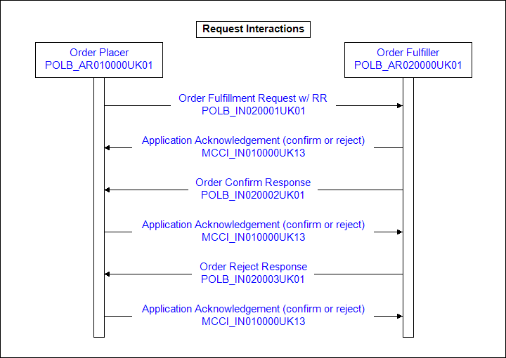
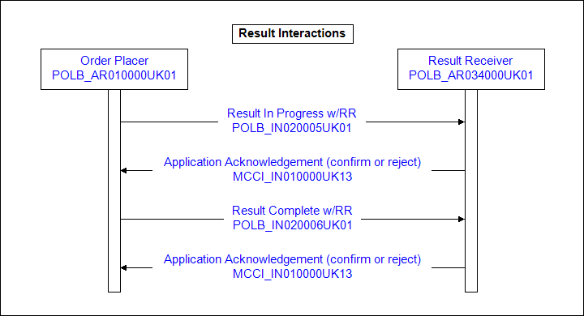

Pathology Implementation Manual - Version 1.3 [Draft]
Contents
The current scope of the Pathology Domain covers the requesting of Laboratory Investigation (s) and the provision of Laboratory reports in response to requests. There is no provision for cancellation of requests, status updates or reflex ordering in the current release.
Laboratory service covers the following diagnostic disciplines and their sub-departments: -
Cellular Pathology
Clinical Chemistry
Haematology
Histopathology
Immunology
Microbiology
Virology
For this release, Blood Transfusion, Laboratory to Laboratory communication and Health Protection Agency reporting are excluded.
The terms Order and Request are synonymous. The HL7 standard traditionally uses the term 'Order' whereas the UK uses the term 'Request'. In the context of this document they are interchangeable.
Each Placer Order (Laboratory Request) will be for one or more Laboratory investigations to a single laboratory department. As the definition of a 'Department' is configuration specific, it is anticipated that there will be a registry of which department carries out which investigations on a National scale.
The scope of the current release covers manual and electronic Laboratory Requests, and electronic Laboratory Reports in response to Laboratory Requests from Primary Care and Secondary Care Out-Patients.
All Laboratory Requests are sent directly from the request Placer to the intended Laboratory Fulfiller.
All Laboratory Reports are sent to the identified Primary Information Recipient, generally the GP/Consultant responsible for the patient at the time of the request. They may also be copied to other HCPs for information.
Provision is made for reporting on requests where some or all investigations are not 'Completed' and a later report is issued when all investigations have been completed.
There may be more than one report issued in fulfilment of a single request, each report being complete in its own right.
Where incomplete reports are issued, the final report will carry all the reported information, not just the new/additional and will update the original in its entirety.
This scenario details a clinical consultation followed by samples taken in the treatment room immediately after the consultation.
Request
Wilfred Smith, a 62 year old hypertensive who feels tired all the time, arrives at his local practice to see his GP. During the consultation Dr Sugden, the GP, makes a preliminary diagnosis of moderate iron deficient anaemia arising from a possible duodenal ulcer and so decides to request a Full Blood Count (FBC) and Urea and Electrolytes (U&Es). He selects the items from the pathology catalogue and, as the practice has contractual arrangements with two laboratories which can carry out the investigations Dr Sugden also indicates that he wants the request to go to Arrowe Park Hospital. The system automatically ascertains that there are two request messages required (one for FBC and one for U&Es) and assigns a local system request number for each request and Placer’s Request IDs (PRID) for the individual request items. He then accepts the complete communication data set and the requests are added to the Treatment room work list.
Mr Smith returns to the waiting room until called. Nurse Pat Screens calls him into the treatment room and reviews the pathology request. She collects the appropriate blood samples and confirms on her clinical system that all the samples have been taken, from which the system sets the actual date and time of collection. This triggers the Order Fulfilment Request interaction (POLB_IN020001UK01) and the sending of the electronic requests to the laboratory
The laboratory system receives the electronic requests and deems them to meet the requirements of the laboratory system for confirming the request. An application acknowledgement for each message is generated and sent to the placer system (POLB_IN020002UK01 or POLB_IN020003UK01 for a rejection)
Specimen Broken Report
The specimens arrive at the laboratory for processing and are booked into the system with appropriate Laboratory specimen numbers
During processing, the SST sample breaks in the centrifuge and can’t be analysed. The Biomedical Scientist, Mr Steve Hogarth, adds a comment of ‘Sample broken in centrifuge’ to the system. He enters a status of aborted for the U&E and authorises the report. This triggers the Result Complete interaction (POLB_IN020006UK01) and the transmission of the results to the practice. The practice system receives the report, checks it and finds that it meets the requirements for acceptance, and responds with a confirmation (MCCI_IN010000UK13).
Completed Report
The FBC is performed and the results are reviewed by a senior BMS, Mr Derek Fish but the haemoglobin and red cell indices are significantly below the normal range. and so Mr Fish requests a film examination as an extra investigation and then authorises the FBC results which are held within the laboratory system awaiting completion of the film examination. The blood film is made, stained and examined and confirms the analyser results of a moderate anaemia, so Mr Fish passes the film onto the consultant haematologist, Dr Dave Gilmour for a clinical review and he adds the comment: ‘The film shows evidence of moderate iron deficiency anaemia, suggest a course of iron and a repeat FBC in two months time, and if there is no improvement it may be necessary to check for chronic blood loss’ and then authorises the film examination. This triggers the result completed interaction (POLB_IN020006UK01) and the transmission of the results to the placer system. The practice system receives the checks it and finds that it meets the requirements for acceptance, and responds with a confirm (MCCI_IN010000UK13).
On reviewing the FBC report, Dr Gilmore phones the laboratory and requests that a Ferritin level be performed on the same blood sample. The laboratory agrees to do this.
Completed Report (Additional Result)
The following day the Ferritin level is completed and the result confirms the iron deficiency. Dr Gilmour reviews the result and adds a comment to the Ferritin level & reauthorises it as Completed. This releases the results and triggers the Result Complete interaction (POLB_IN020006UK01) The report is built containing all the previously reported results for the request (re-reporting the FBC and film examination) and transmitted to the requesting practice. The practice system receives the report, checks it and finds that it meets the requirements for acceptance, and responds with a confirm (MCCI_IN010000UK13).
Introduction
This scenario details a clinical consultation followed by dynamic function test taken by the placer
Request
Mr Waters arrives at Valley Surgery for a consultation with Dr Stone. During the consultation he notes that Mr Waters may be suffering from late onset diabetes and he decides to request a Glucose Tolerance Test. He selects the item from the pathology catalogue, confirms his selection and adds the supporting clinical information “?Late onset Diabetes”.
Dr Stone then completes the consultation by asking Mr Waters to fast from 6pm tonight and return to the practice at 10am the following morning when the practice nurse, Nurse Douglas, will carry out the Glucose tolerance test.
Mr Waters returns to the practice the following morning and waits until called. Nurse Douglas calls Mr Waters into the treatment room and reviews the pathology request. Mr Waters assures her that he has fasted and Nurse Douglas confirms that the first sample is to be taken immediately, that she will be taking samples at 0, 30, 60 and 120 minutes and she instructs the system to print out the labels. She performs the GTT according to the protocol and enters the appropriate data into the system. Completion triggers an Order Fulfilment Request interaction (POLB_IN020001UK01) and the sending of the electronic request to the laboratory.
Request Confirm
Electronic request arrives in laboratory system and is deemed to meet the requirement of the Order Confirm trigger. An application acknowledgement for the message is generated and sent to the requesting practice system (POLB_IN020002UK01).
Specimen arrives at laboratory reception
The specimens arrive at the laboratory and each specimen ID contained within the barcode is scanned into the LIMS and matched with the electronic request. At this point, the medical laboratory assistant, Miss Hogarth, checks the sample details with the electronic request and confirms their conformance.
The requests are given laboratory numbers and sent for processing. The samples are analysed and the glucose results are reviewed by a senior BMS, Mr Mason, who authorises the results. This releases all the results and triggers the building and transmission of the report (MCCI_IN010000UK13).
Results Report Received at GP Practice
The electronic report arrives at the practice, an application acknowledgement
is generated and sent back to the laboratory (MCCI_IN010000UK13).
The applications involved in the Laboratory processes play specific roles. These, along with the interactions associated with each role, are identified below.
The Order Placer is the application role that originates and manages the state of an order (an Act in RQO mood). This application role is responsible for communicating changes to state of the order. The order placer is expected to manage the state of the order in response to changes to related promises and result events.
Order Placer Interactions.
The Order Fulfiller is a laboratory system that receives orders and sends
observation results. The order fulfiller manages the state of promises and events.
This application role is responsible for communicating changes to the state
of both promises and events. This application is expected to receive orders
and respond with promises and events. The order fulfiller is expected to manage
the state of promises and events in response to changes in the state of orders.
Order Fulfiller Interactions.
The Result Receiver is any system that receives Laboratory Result (event) messages. The Result Receiver may be the original placer of the order or may be a tracker application that is capable of receiving a message from another system about any state change of a laboratory observation. Note: this does not imply such a tracker stores the observation event. This does not preclude the event tracker from also storing the event.
Result Receiver Interactions.
This event marks the point at which a order becomes active. The earliest this event can occur is at the point at which the order could be communicated to a filler. This does not mean that the order is actually communicated at that point. An active order does not assume that a filler for the order has been identified. This may be prior to or after the collection of the sample on which the investigations are to be carried out.
| Structured Name | Placer Order Activate |
| Type | State-transition Based |
Rejection of a placer order. This trigger indicates the request has been
received, has been deemed invalid and has been rejected.
| Structured Name | Placer Order Rejection |
| Type | Interaction Based |
Acceptance of a placer order. This trigger indicates the order meets the
requirements of the receiving application and is appropriate for processing
but does not imply a promise to fulfil.
| Structured Name | Placer Order Accept |
| Type | Interaction Based |
Indicates that the issuing of a laboratory observation has occurred, and that preliminary results are available.
post entry of results and based on internal 'system' rules
post manual verification of results.
The report shall be still 'active'. Reports that are sent with a status of 'active' are incomplete, and indicate that a further 'completed' report is intended to be sent to replace it at a later date.
| Structured Name | Laboratory Report Release |
| Type | State-transition Based |
The Trigger Event for the sending of a Laboratory Report is the 'authorisation for release'. This may be:
post entry of results and based on internal 'system' rules
post manual verification of results.
The report shall be 'Completed'. Receipt of a 'Completed' report does not exclude receipt of a replacement 'Completed' report at a later date.
| Structured Name | Laboratory Report Release |
| Type | State-transition Based |
This is the trigger event for reporting to a Tracker system. Any change to the Fulfiller order is communicated without the detail of the actual type of change (in-progress, Completed etc)
| Structured Name | Interactions With Receiver Responsibilities Event State Change |
| Type | State-transition Based |


This interaction is a Order Fulfillment Request with Receiver Responsibilities (i.e., the sending system utilizes messages that require application-level responses). This interaction is used when a fulfillment request is communicated. If the receiving role is a filler, the expectation is to confirm or reject the request. This is a "low level" receipt of a valid message confirmation. A "business level" confirmation will generally follow later.
| Sending Role | Order Placer | POLB_AR010000UK01 |
| Receiving Role | Order Fulfiller | POLB_AR020000UK01 |
| Trigger Event | Order Activate | POLB_TE001100UK01 |
| Transmission Wrapper | Send Message Payload | MCCI_MT010101UK12 |
| Control Act Wrapper | Control Act | MCAI_MT040101UK03 |
| Message Type | Placer Order | POLB_MT001000UK01 |

Receiver Responsibilities
| Reason | Interaction |
| Receiver is confirming receipt of an Order Fulfillment Request | MCCI_IN010000UK13 |
| Receiver is rejecting receipt of an Order Fulfillment Request | MCCI_IN010000UK13 |
This interaction is a Order Confirm Response. This is used by a filler to confirm receipt of an order. It does not imply that the filler will fulfill the order but that the order is acceptable to the receiving system and there is no reason why it cannot be fulfilled. This interaction implies more that just that the message has been received and is well formed. Typically the specimen will have arrived, but this does not necessarily mean that the order will ultimately be carried out. If for example the specimen proved inadequate for testing, a report would be issued with this text conveyed.
| Sending Role | Order Fulfiller | POLB_AR020000UK01 |
| Receiving Role | Order Placer | POLB_AR010000UK01 |
| Trigger Event | Order Confirm | POLB_TE001002UK01 |
| Transmission Wrapper | Send Message Payload | MCCI_MT010101UK12 |
| Control Act Wrapper | Control Act | MCAI_MT040101UK03 |
| Message Type | Placer Order | POLB_MT001002UK01 |
Receiver Responsibilities
| Reason | Interaction |
| Receiver is confirming receipt of an Order Confirm Response | MCCI_IN010000UK13 |
This interaction is a Order Reject Response. This response is used by the filler to reject an order related interaction. Where an Order Reject message is received by a system, the issue needs to be investigated by a manual process to identify the reason for the rejection and resolve it.
| Sending Role | Order Fulfiller | POLB_AR020000UK01 |
| Receiving Role | Order Placer | POLB_AR010000UK01 |
| Trigger Event | Order Reject | POLB_TE001003UK01 |
| Transmission Wrapper | Send Message Payload | MCCI_MT010101UK12 |
| Control Act Wrapper | Control Act | MCAI_MT040101UK03 |
| Message Type | Placer Order | POLB_MT001002UK01 |
Receiver Responsibilities
| Reason | Interaction |
| Receiver is confirming receipt of an Order Confirm Response | MCCI_IN010000UK13 |
This interaction is a Result in Progress with Receiver Responsibilities (i.e., the sending system utilizes messages that require application-level responses). This interaction indicates that the Laboratory observation has occurred and preliminary results are being communicated with this notification. The expected responses to this interaction are confirm or reject.
| Sending Role | Order Fulfiller | POLB_AR020000UK01 |
| Receiving Role | Result Receiver | POLB_AR034000UK01 |
| Trigger Event | Result In-progress | POLB_TE004100UK01 |
| Transmission Wrapper | Send Message Payload | MCCI_MT010101UK12 |
| Control Act Wrapper | Control Act | MCAI_MT040101UK03 |
| Message Type | Result Event | POLB_MT004000UK01 |
Receiver Responsibilities
| Reason | Interaction |
| Used when receiver confirms receipt of Results in Progress | MCCI_IN010000UK13 |
| Used when receiver rejects receipt of Results in Progress | MCCI_IN010000UK13 |
| Sending Role | Order Fulfiller | POLB_AR020000UK01 |
| Receiving Role | Result Receiver | POLB_AR034000UK01 |
| Trigger Event | Result Complete | POLB_TE004200UK01 |
| Transmission Wrapper | Send Message Payload | MCCI_MT010101UK12 |
| Control Act Wrapper | Control Act | MCAI_MT040101UK03 |
| Message Type | Result Event | POLB_MT004000UK01 |
Receiver Responsibilities
| Reason | Interaction |
| Used when receiver confirms receipt of a Result Complete | MCCI_IN010000UK13 |
| Used when receiver rejects receipt of a Result Complete | MCCI_IN010000UK13 |
This interaction is used for reporting 'Copy to' reports between the Order Fulfiller and any Result Receiver other than the primary recipient. The tracker is not informed of the trigger event is in any more detail (c.f. Result in Progress, Result Complete). Although unhelpfully named, this interaction is named to conform to international nomenclature. There is no specific "copy" interaction, so a generic state change is used (in this case, the system state change of results becoming available).
| Sending Role | Order Fulfiller | POLB_AR020000UK01 |
| Receiving Role | Result Receiver | POLB_AR034000UK01 |
| Trigger Event | Result Event State Change | POLB_TE004007UK01 |
| Transmission Wrapper | Send Message Payload | MCCI_MT010101UK12 |
| Control Act Wrapper | Control Act | MCAI_MT040101UK03 |
| Message Type | Result Event | POLB_MT004000UK01 |
Receiver Responsibilities
| Reason | Interaction |
| Used when receiver confirms receipt of a Result Event State Change | MCCI_IN010000UK13 |
| Used when receiver rejects receipt of a Result Event State Change | MCCI_IN010000UK13 |
A message containing the requesting of one or more Laboratory Investigations to be fulfilled by a single laboratory fulfiller department. The same message structure is used for all Request Events.


A 'Laboratory Request' message containing a request for a Urea & Electrolytes (U&E) to be performed on a single sample. The Requested U&E is carried as an Observation under the Request act. The Request act serves to link all request information and the specimen with the collection time to one or more requested items. In this example, there is only one requested item for the specimen. Each request is for a single fulfiller department. Although the actual request made by the requester consisted of two requested items, they were on different specimens (because of the container type) and were for different fulfiller departments. This resulted in two request messages being generated, one for the Chemistry Department, this example and one for the Haematology Department, see below. (See W5 Scenario 8.1).

A 'Laboratory Request' message containing a request for a Full Blood Count (FBC) to be performed on a single sample. This was generated as part of the same request on the placer system as Example 1. but communicated in a different message as there is a different provider department (See W5 Scenario 8.1).
A 'Laboratory Request' message containing a request for Culture and Sensitivity on a Stool sample. See W5 Scenario 8.3
A 'Laboratory Request' message containing a request for a Glucose Tolerance Test (GTT). The Request is for the whole GTT with individual requested items of 'Glucose Measurement' each associated with the appropriate specimen on which the analysis is to be performed. (See W5 Scenario 8.4).
A 'Laboratory Request' message containing a request for Histological examination of a specimen. (See W5 Scenario 8.5)
A message containing the active (in progress) or completed Laboratory findings and interpretation of one or more diagnostic investigations carried out in response to a Placer Order. This message is used for all Result Events and for any result status changes.
Note:- The act.Code carried in the Focal Act of the report shall only carry codes that represent Reports and not those that represent specific investigations (Batteries/Observations). The use is, for example: - 'Laboratory Report', where there is a single specimen referenced in the report. Where there are multiple specimens referenced in the report for such things as Dynamic Function Tests, Multi-sample screening (MRSA screen on multiple swabs), appropriate codes from Snomed CT may be used.

A 'Laboratory Report' message containing results for aborted U&E because of broken specimen. A Laboratory comment is carried at the Report level along with the aborted investigation. (See W5 Scenario 8.1)
A 'Laboratory Report' message containing results for FBC investigation on a single sample with a second follow-up report. The second report also contains all the previous results that have not been changed. (See W5 Scenario 8.1).
First Final Report :-
Second Final Report with additional test result :-
An interim 'In Progress' laboratory report message for a Stool Culture & Microscopy. A final 'Completed' report follows with the final results. Previously reported information that is still valid is also carried in the message for completeness. (See W5 Scenario 8.3)
Interim Report :-
Final Report :-
A ‘Laboratory Report’ message for a Dynamic Function Test. The Report carried a concept ID for the Glucose Tolerance Test and shall not have any result. Individual results for the Glucose analysis is carried in individual observations, each associated with its specimen. (See W5 Scenario 8.2).
A ‘Laboratory Report’ message for a Histopathology Report. (See W5 Scenario 8.4).
A result message for a Urine Culture and Sensitivity showing how isolates with their sensitivity tests are carried. The Focal Act of the report carries a compound investigation code which may not have a result. The Microscopy is carried out on the specimen entity. The two isolates are carried as individual entities, each with their own set of observations carrying their antibiotic susceptibility results. Other observations on the isolates, such as a growth amount or identification tests, would be carried as an observation on the individual isolate.
A message containing a minimal payload, with identifiers that refers back to a previous order, being confirmed or rejected.

| Isolate | An organism identified as part of the laboratory procedures. Generally, only isolates that are considered to be significant are included as isolate entities. |
| Laboratory | A receiver and fulfiller of Placer Orders. A Laboratory takes responsibility to provide a service on acceptance of a Placer Order. |
| Placer Order | A request to a Laboratory department for work to be carried out. |
| Placer Order Group | A group of related orders. This allows the placer to regroup multiple reports related to one placer group of orders |
| Result Event | A communication of one or more observations (investigations). These may be in-progress or complete. |
| Specimen | The material that is the subject of the investigations carried out. May be any body material or any isolate derived from a parent specimen |
Effective Time
The most important time is the clinically significant time of the investigations. This is taken as the collection time of the specimen and is carried in the Specimen Collection Process (Effective Time).
The effective time of each investigation (OBS) reflects this collection time.
Specimen Received
The time the specimen is received in the lab is carried in the effective time of the Process Step associated with the specimen. The available SnCT codes for this act shall be:-
Specimen Received.
Future process steps will be "Specimen Dispatched, Specimen stored".
Reports
The effective time of a report on a single specimen is the time that the specimen was collected.
In Single specimen reports this does not present an issue. In multi-specimen reports, the effective time of the report is generally when the first specimen being investigated was collected. For a Glucose Tolerance Test (GTT) this would be the start time of the GTT (collection time of first sample)
For a Microbiological screening set of swabs, the effective time would be the collection time of the first swab (time in minutes is not relevant here).
For Virology on an Acute specimen, the effective time is the time of the collection of the acute specimen.
For Virology on an Convalescent specimen, the effective time is the time of the collection of the Convalescent specimen.
For a virology Paired Sera, the effective time of the report would be the collection time of the second specimen.
Batteries
All components of a ‘Battery’ are carried out on a single specimen. (Exception is made where a result is calculated using information from another source but is held against a ‘master’ specimen). The effective time of a Battery is the collection time of the specimen on which the battery of tests was carried out
Authorized Date/Time
The Author time (Participation) is the time when the report was authorized/verified and is carried in the Author participation.
Report Trigger Time.
This is the time the system is triggered to send the report by a state change. It is carried in the Control act as the trigger event time.
Message Transmission Time
This is the actual message transmission time and is carried in the Transmission wrapper.
When a Laboratory Report message is sent from an Order Fulfiller to the Result Receiver (or Tracker), there are a number of Acts within the message which have a status that is conveyed between the two systems.
In response to a Placer Observation Request, work is booked into the laboratory system to fulfill the request. A single observation request may result in one or more laboratory investigations (Individual tests or Batteries of tests) being performed in order to fulfill it. As each Laboratory investigation is carried out, it will move from being active to completed. Investigations may also be aborted before completion and a report issued indicating this.
Investigations are generally reported upon when completed but there may be instances where an ‘interim’ or 'in progress' result is 'released' for reporting before completion of some or all the investigations being performed. The initial report may be followed by further ‘Interim’ reports before a final 'completed' report is issued. When all investigations performed in response to a placer request satisfying have been reported as completed (or aborted) in a Completed report, and the Placer Request itself has all Observation Requests fulfilled, it shall be set to completed by the placer.
Valid Status of Request Acts
| Act | Placer System Status Options | Message Status Options |
| Placer Group | active, completed, aborted, nullified | active, nullified |
| Observation Request | active, completed, aborted, nullified | active, nullified |
These statuses may only be set by the Placer system. All request messages and their observation requests shall have a status of Active unless the request is being Nullified.
Valid Status of Report Acts
| Act | Fulfiller System Status Options | Message Status Options |
| Observation Report | active, completed, nullified, obsolete | active, completed, nullified |
| Specimen Observation Cluster | active, completed, aborted, nullified, obsolete | active, completed, nullified |
| Battery Event | active, completed, aborted, nullified, obsolete | active, completed, aborted, nullified, obsolete |
| Observation Event | active, completed, aborted, nullified, obsolete | active, completed, aborted, nullified, obsolete |
These statuses may only be set by the Fulfiller system. All 'Completed' Report messages shall have their status set to 'Completed'. Their components shall have a status of 'Completed' or 'Aborted'. The components of a Nullified report shall all be set to Nullified. The status of a 'Replaced' report or component shall be set to 'Obsolete'.
Guidance on the status of various acts in the 'Laboratory Report' message is provided below for Scenarios 1, 2 and 3.
Note that the receipt of a 'Completed' report does not exclude receipt of a further completed report with additional information added by the sender to supersede the previous.
A single request for multiple Laboratory investigations is booked onto the LIMS.
The investigations are carried out and completed. A single report for multiple-investigations is reported
A single message is generated where the following are set:
| Act | Status Options | Implication |
| Observation Report | completed | If all placer request items are fulfilled (which they are), the placer shall set the status of the request to Completed |
| Observation Event | completed | |
| Observation Event | completed |
A single request for two Laboratory investigations is booked onto the LIMS.
The first investigation is carried out and completed. An in-progress report is issued. The intention is that this is an interim report which shall be superseded by a further report containing the results of both investigations.
A first message is generated where the following are set:
| Act | Status Options | Implication |
| Observation Report | active | As the Report is still active (Interim), the Placer shall expect an updated further report in completion of their request which will supersede this one |
| Observation Event 1 | completed |
The second Laboratory Procedure is carried out and completed. A report is transcribed and verified.
A second message is generated where the following are set:
| Act | Status Options | Implication |
| Observation Report | completed | The report is Completed. If all placer request items are now fulfilled (which they are), the placer shall set the status of the request to Completed |
| Observation Event 1 | completed | |
| Observation Event 2 | completed |
A single request for two Laboratory investigations in one department is booked onto the LIMS as two requests
These will be treated as two separate laboratory requests and each will generate a separate report fulfilling part of the Placer request.
A Report message is generated on this completed investigation where the following are set:
| Act | Status Options | Implication |
| Observation Report1 | completed | The report is Completed. If all placer request items are now fulfilled (which they are NOT), the placer shall set the status of the request to Completed |
| Observation Event 1 | completed |
The second Laboratory Investigation is carried out and completed.
A new report is created and a new Report message generated on this completed investigation where the following are set:
| Act | Status Options | Implication |
| Observation Report2 | completed | The report is Completed. If all placer request items are now fulfilled (which they NOW are), the placer shall set the status of the request to Completed |
| Observation Event 2 | completed |
Both individual reports are valid, Completed and together they satisfy the Placer Request.
In this case, the first report received in partial fulfillment of the Placer Request shall NOT be superseded by the second. Each will have a different ID. There are two valid reports in fulfilment of the Placer Request. Neither report requires the other for interpretation but the Placer request requires that both are read in order to fulfill it.
Completed Reports may not contain incomplete (Active) Observation events.
Version 1.3 - MIM 7.2
Version 1.2 - MIM 6.1.01
Version 1.1 - MIM 5.1